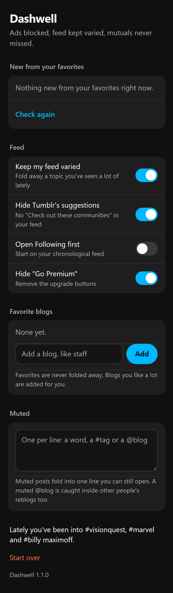

one like shouldn't flood your whole dash.
dashwell is a little extension and android app for tumblr. it blocks the ads, stops your feed turning into one topic, and makes sure you never miss your mutuals. no account, no api key, nothing leaves your device.
free and open source · works on chrome, comet, edge, brave and firefox
you liked one black hole post and tumblr made it your whole personality.
and it forgets everything you liked before that. dashwell remembers, and keeps the rest of your dash around.
- ads and sponsored posts, gone.blocked before they load, using the same lists ad blockers use.
- a topic you've seen a lot lately folds into one line.nothing gets deleted, tap show and it's there. tapping show teaches it too.
- your old interests stay.a fresh like doesn't wipe out months of what you actually like.
- mutuals never get folded.it notices the blogs you always like, even the quiet ones, and lets them through.
- following stays chronological.but if someone goes on a 20-post reblog spree, it folds after 3.
- mute words, #tags and @blogs.a muted blog gets caught inside other people's reblogs too, which tumblr's block doesn't do.
- no "check out these communities", no go premium, no "rather use the app?"
it still looks like tumblr, because it is tumblr.
it doesn't reskin anything. normal posts look exactly the same, and the only new thing is a calm line where a post got folded. everything else lives in one small settings page, in plain words, so you can switch any of it off.

how it decides what to fold
it's not ai and it doesn't phone home. it's a small bit of javascript that runs on your device and keeps a note of the tags you scroll past, like and reblog.
every topic gets a fair share of your dash based on what you've liked over months, not your last tap, so one like on something new gets maybe 2 posts in every 16 instead of your entire evening. if you keep scrolling past something it cools down for a bit, and if you like three posts about a new show in one go it figures that's a real new obsession and lets it in. it also works out that #black holes and #space are basically the same topic from how people tag things, which honestly was the fun part.
the maths comes from actual recommender research (calibrated recommendations, satiation, tie strength) and the whole thing is in feed.js if you want to read it.
install it
both are free. both tell you when there's an update.
android
- download Dashwell.apk and open it
- allow installing from your browser if your phone asks
- log in to tumblr inside the app, once. it stays logged in across updates
google and apple sign-in don't work inside apps (they block it). on the login screen tap "forgot password" with your google email to set a password, then log in with that.
browser
- download Dashwell-extension.zip and unzip it
- open
chrome://extensionsand turn on developer mode - click load unpacked and pick the folder. open your dash
on firefox it's about:debugging, then load temporary add-on, then pick manifest.json.